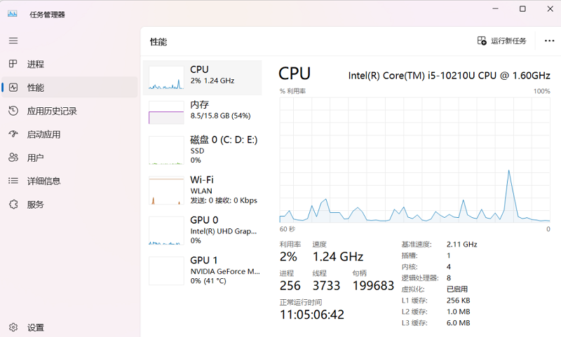

计算机基础知识
General
- 发展史 Development
- 系统组成 Components
- 一个完整的计算机系统包含硬件系统和软件系统两大部分
- 趋势 Trend
- 巨型化 Gigantization / Super-scaling
算力
- 微型化 Miniaturization
- 网络化 Networking
- 智能化 Intelligence
- 绿色化 Green Computing
- 特点 Feature
- 运算速度快
- 计算精度高
- 具有记忆存储功能
- 有逻辑判断功能
- 能进行自动控制
- 应用 Application
- 科学计算
算力
- 数据处理
大数据时代
- 过程控制
人机交互
- 计算机通信
数字通信
- 辅助控制
CAD (Computer Aided Design，计算机辅助设计)
CAM（Computer Aided Manufacturing，计算机辅助制造）
CBE (Computer-Based Education，计算机辅助教育)
CAI (Computer Aided Instruction，计算机辅助教学)
- 多媒体技术的应用
- 虚拟现实
VR (Virtual Reality，虚拟现实)
AR (Augmented Reality，增强现实)
- 人工智能 Artificial Intelligence
- 新技术
- 云计算 Cloud Computing
亚马逊云 AWS (Amazon Web Services)
阿里云 ECS (Elastic Compute Service)
腾讯云 CVM (Cloud Virtual Machine)
- 物联网技术 IOT
物流
智能家居
监控、监测
- 并行处理技术
- 网格技术 Grid
- 蓝牙技术 Blue tooth
- 嵌入技术 Embedded Systems Technology
- 中间件技术 Middleware
高内聚，低耦合 (High Cohesion, Low Coupling)
| 年代 | 元器件 | 处理方式 | 应用 | |
|---|---|---|---|---|
| 第1代 | 1946 - 1957 | 电子管 | 机器语言、汇编语言 | 科学计算 |
| 第2代 | 1958 - 1964 | 晶体管 | 监控程序、高级语言 | 数据处理、过程控制 |
| 第3代 | 1965 - 1970 | 集成电路 | 实时处理、操作系统 | 系统设计、科技工程领域 |
| 第4代 | 1971 - | 大规模、超大规模集成电路 | 实时/分式处理、网络操作系统 | 各行各业 |
| 第5代 | 智能计算机 | 大模型 LLM | 各行各业 |

硬件 Hardware
- 组成计算机的各个硬件部分
- 眼睛能看得到的物理存在
- 显示器 Monitor
- 尺寸大小：对角线长度；14寸、17寸、21寸、27寸
- 分辨率：如1920×1080（FHD）、2560×1440（QHD）、3840×2160（4K）
- 刷新率：60Hz、144Hz、240Hz等，影响画面流畅度
- 键盘 Keyboard
- USB键盘
- 蓝牙键盘：无线连接
- PS/2 键盘：老式键盘；圆形的6针接口鼠标；插拔非常容易损坏
- 标准键盘：104 键
- 拓展键盘：108+，增加了很多其它控制，如音量大小、网络连接等等
- 笔记本键盘：键数87/88；受空间限制，去掉了右侧的数字小键盘区
- 单键
- 组合键：
需要先后按多个键来实现更多操作，多配合 CTRL、SHIFT、ALT 等控制键使用
松开/释放按键无特定要求
Win + E：先按住 Win 键，再按住 E 键，即可打开资源管理器
- 鼠标 Mouse
- USB鼠标
- 蓝牙鼠标：无线连接
- PS/2 鼠标：老式键盘；圆形的6针接口鼠标
- 一般为三键鼠标：
左键：支持单击、双击、三击；双击时，应该快速、连续
中键：滚轮；拨动时，可以滚动窗口
右键：万能的右键；在你不知道可以做什么的时候，试试它
- 也有多键鼠标，如游戏竞技鼠标
- 主机 Host
- 主板 Motherboard：
一块大的PCB板，上面有各种集成电路和插槽
连接所有硬件的核心电路板，提供插槽、接口和供电管理
- 中央处理器 CPU：
计算机的大脑，负责执行指令和处理数据
架构版本：第几代产品；买新不买旧
主频高级：干活的快慢
内核多少：有多少干活的
为了降低 CPU 工作时产生的热量，需要在 CPU 支架涂抹硅胶
- 显卡 GPU / Graphics Card：
普通用户多为集成显卡
特殊职业需要独立显卡以改善用户体验，如设计、游戏，特别是3D创作
- 内存 RAM：
临时存储运行中的程序和数据，影响多任务处理能力
常见容量：4G、8G、16G、32G
访问速度快
断电会丢失数据；工作时，要经常保存
- 硬盘 Hard Disk：
持久存储
固态硬盘（SSD - Solid State Drive） 高速物流中心
机械硬盘（HDD - Hard Disk Drive），老式仓库
访问速度比内存慢
掉电数据不会丢失
- 声卡 Sound Card：
主板集成
独立声卡：专业录音/HiFi需求
- 风扇：
为系统降温
可以是1个或多个
还可以使用外部风扇为系统降温
如果是笔记本电脑，还可以外部使用笔记本支架
注意保持通风口整洁
- 电源 Power：
为整机提供稳定电力
功率需匹配其他硬件需求
- 适配器 Adapter：
有线以太网口（RJ45- 水晶头）或无线Wi-Fi模块
早期称之为网卡 NIC
- 外部存储设备 Storage
- U盘：使用 USB 接口；小容量移动存储
- 移动硬盘（External HDD/SSD）：通过USB连接的大容量备份设备
- 光盘，需要配合光驱使用
- 其它设备
- 音响 Speakers
- 耳机 Headphones
- 数位板（绘图用）
- 麦克风（内置或外接）
- 摄像头（Webcam）
- 指纹识别器 / 面部识别模块（笔记本标配）
- 触控板（笔记本标配）
- 机箱：将各种设备，通过各种接口整合起来
软件 Software
- 系统软件 System Software
- 是指担负控制和协调计算机及其外部设备、支持应用软件的开发和运行的一类计算机软件
- 一般包括 操作系统、语言处理程序、数据库系统和网络管理系统
- DOS系统：Disk Operating System，磁盘操作系统；最早期的系统
- Win10操作系统：视口/窗口系统；具备图形化界面
- Linux系统
- 苹果的MacOS操作系统
- 手机端的Android系统
- 鸿蒙系统 HarmonyOS
- 塞班系统 Symbian OS：诺基亚系统；曾经的王者；功能机向智能机过渡
- 应用软件 Application Software
- 为特定领域开发、并为特定目的服务的一类软件
- 它是直接面向用户需要，帮助用户提高工作质量和效率，甚至可以帮助用户解决某些难题等等
- 系统自带应用软件：
记事本 Notepad：基本的文本处理
计数器 Calculator
绘图软件 Draw
- Office 办公软件：一般包括字处理 Word、电子表格 Excel和演示文稿 PowerPoint 等等
- 浏览器：上网使用；推荐使用谷歌 Chrome和Edge
- 图形图像处理软件：Photoshop
- 影音软件：QQ音乐、酷狗音乐
- 社交软件：微信、QQ、腾讯会议
- 编程开放软件：Vs Code、PyCharm
- 各种游戏
有些软件是系统自带的
大部分软件需要下载安装才能使用
随着云 Cloud 的普及，很多软件都提供了云上版本
分类 Classification
- 按原理分类 (By Principle)
- 根据计算机处理数据的方式（信号类型）分类
- 特点：处理离散的数字化信号（0和1）
- 现状：目前我们日常使用的所有计算机（PC、手机、服务器、嵌入式设备）都属于此类。精度高、逻辑判断能力强、存储容量大
- 特点：处理连续的物理量信号（如电压、电流、温度）
- 现状：早期用于科学计算（如解微分方程），现在已很少见，但在某些特定的实时控制系统或传感器前端仍有应用。运算速度快但精度较低
- 特点：结合了数字和模拟计算机的特点
- 现状：主要用于需要高速实时控制且需要高精度计算的复杂场景，如航天飞行模拟、医疗监护仪等
- 按用途分类 (By Usage)
- 根据计算机设计的目的和应用范围分类
- 特点：功能全面，可运行各种软件，适应性强
- 例子：个人电脑 (PC)、笔记本电脑、智能手机。它们既可以用来办公，也可以用来玩游戏或看电影
- 特点：为了解决特定问题而设计，效率高但功能单一
- 例子：嵌入式系统（如洗衣机控制器、汽车ECU）、工业控制机、ATM机、导航仪。这与你之前问到的“嵌入式技术”紧密相关
- 按规模分类 (By Scale/Size)
- 根据计算机的性能指标（速度、存储容量、价格、体积）进行的传统分类
- 定位：性能最强，用于国家级战略需求
- 应用：气象预报、核武器模拟、基因测序、宇宙探索
- 定位：高可靠性、高I/O吞吐量
- 应用：银行核心交易系统、航空公司订票系统、大型数据库服务器
- 定位：介于大型机和微型机之间（历史上曾流行，现概念逐渐被高性能服务器取代）
- 应用：中小企业服务器、部门级数据处理
- 定位：基于微处理器，体积小，价格低
- 应用：个人电脑 (PC)、平板电脑。这是我们最熟悉的类型
- 定位：高性能的微型计算机，专为专业领域优化
- 应用：CAD/CAM 设计、3D 渲染、视频剪辑、科学计算。通常配备专业显卡和大内存
- 定位：为网络中的其他计算机提供服务
- 应用：网站托管、云计算节点（如AWS/阿里云 ECS）、数据库服务
性能指标 Specification
- 主频
- 机器内部主时钟的运行频率，常以MHz、GHz为单位；主频越高，执行指令的速度越快
- 时钟周期，主频的倒数：CPU时钟周期=1/主频；1Khz=1*103 次/秒，即每秒103个时钟周期
- CPI：指令的平均时钟周期 clock per instruction；每条指令执行需要的时钟周期
- IPC：周期运行指令条数 instruction per clock；IPC=1/CPI
- 运算速度
- 用每秒执行的指令数来衡量
- MIPS - million instruction per second，每秒百万条指令；MIPS=主频/CPI=主频*IPC
- MFLOPS - million floating-point operation per second，每秒百万次浮点运算
- 主频是80Mhz，CPI是4；求MIPS
-
分析：从单位的变换入手80MHZ，即每秒80M的时钟周期：80M clock/秒CPI是4，即每个指令需要4个时钟周期：4 clock/指令80M/4=20M 指令/秒=20MIPS
- 字长
- 指CPU一次能处理的数据的位数
-
机器字长：通常说的32位或64位，指的是计算机执行一次整数运算能够处理的二进制数据的位数存储字长：一个存储单元存储的二进制代码的位数；一般和机器字长相等，也可以是机器字长的整数倍指令字长：一条指令包含的二进制代码的位数；可以等于存储字长；也可以是存储字长的整数倍
- 机器字长32位，存储字长8位，读的时候一次读32位，相当于读了4个存储单元的数据，再通过其它方法使用其中特定的数据
- CPU核数
- 多核CPU可以增强计算机的并行处理能力。目前CPU有双核、4核、8核和12核、16核等多种类型
- 存储容量
- 指能存储信息的最大容量，一般包含主存容量和辅存容量。常用单位有MB、GB、TB等

思维 Thinking
- 科学思维 (Scientific Thinking)
- 指基于观察、假设、实验、验证和推理来理解自然现象和解决问题的思维方式
- 是计算思维的前导和基础
- 没有科学思维中的逻辑性、实证性和系统性，很难发展出严谨的计算思维
- 计算思维 (Computational Thinking)
- 运用计算机科学的基础概念进行问题求解、系统设计以及人类行为理解的一系列思维活动
- 四大核心要素：
分解 (Decomposition) —— 把大问题拆成小问题
模式识别 (Pattern Recognition) —— 寻找相似性与规律
抽象 (Abstraction) —— 忽略无关细节，聚焦关键特征
算法设计 (Algorithm Design) —— 制定步骤化解决方案
- 应用场景：
编程开发（如写一个排序程序）
数据分析（如从海量日志中找出异常）
自动化流程设计（如机器人路径规划）
甚至日常生活（如安排旅行路线）
- 思维能力培养 (Cultivation of Thinking Skills)
- 案例分析法（如分析一个失败的系统架构）
- 项目驱动学习（PBL）—— 如设计一个简单的智能家居控制系统
- 跨学科融合（结合数学、物理、工程等）
- 反思与迭代（调试错误、优化方案）